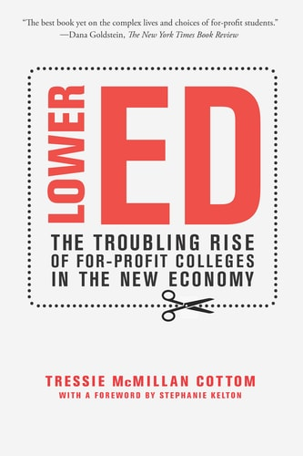
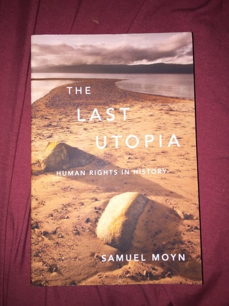

<div class="center"> <h1>Sex and Drugs and Guns and Code</h1> <p><img src="../../files/talks/codebender-logo.svg" alt="Third Bit logo" width="20%" /></p> <p>Greg Wilson</p> <p><img src="../../files/talks/cc-by.svg" width="20%" alt="CC-BY" /></p> </div> --- ## What They *Don't* Talk About - Sarah Drasner: *[Engineering Management for the Rest of Us](https://isbnsearch.org/isbn/9798986769318)* (2022) - Camille Fournier: *[The Manager's Path](https://isbnsearch.org/isbn/9781491973899)* (2017) - Claire Hughes Johnson: *[Scaling People](https://isbnsearch.org/isbn/9781953953216)* (2023) - Cate Huston: *[The Engineering Leader](https://isbnsearch.org/isbn/9781098154066)* (2024) - Will Larson: *[An Elegant Puzzle](https://isbnsearch.org/isbn/9781732265189)* (2019) - Will Larson: *[Staff Engineer](https://isbnsearch.org/isbn/9781736417911)* (2021) - Edmond Lau: *[The Effective Engineer](https://isbnsearch.org/isbn/9780996128100)* (2015) - Gergely Orosz: *[The Software Engineer's Guidebook](https://isbnsearch.org/isbn/9789083381824)* (2023) - Tanya Reilly: *[The Staff Engineer's Path](https://isbnsearch.org/isbn/9781098118730)* (2022) - Matthew Skelton and Manuel Pais: *[Team Topologies](https://isbnsearch.org/isbn/9781942788812)* (2019) - James Stanier: *[Become an Effective Software Engineering Manager](https://isbnsearch.org/isbn/9781680507249)* (2020) - Andrew Swerdlow: *[Tech Leadership](https://isbnsearch.org/isbn/9798988984917)* (2023) - Merih Taze: *[Engineers Survival Guide](https://isbnsearch.org/isbn/9798985349900)* (2021) --- ## Too Dry - Marc Steen: *[Ethics for People Who Work in Tech](https://isbnsearch.org/isbn/9780367542436)* - Nachshon Goltz and Tracey Dowdesell: *[Real World AI Ethics for Data Scientists](https://isbnsearch.org/isbn/9781032275055)* - Eugene Schlossberger: *[Ethical Engineering: A Practical Guide with Case Studies](https://isbnsearch.org/isbn/9781032151120)* --- ## Politics <div class="row"> <div class="col-4"> </div> <div class="col-8"> <p> Peter Wendorff: <a href="https://isbnsearch.org/isbn/9781484273791"><em>Politics in Software Development</em></a> </p> </div> </div> --- ## Kill It With Fire <div class="row"> <div class="col-4"> </div> <div class="col-8"> <p> Marianne Bellotti: <a href="https://isbnsearch.org/isbn/9781718501188"><em>Kill It With Fire</em></a> </p> </div> </div> --- ## Title <div class="row"> <div class="col-4">  </div> <div class="col-8"> <p> Tressie McMillan Cottom: <a href="https://isbnsearch.org/isbn/9781620974384"><em>Lower Ed: The Troubling Rise of For-Profit Colleges in the New Economy</em></a> </p> <p> Describes how a large part of the educational sector in the US exists to translate government grants into personal debt for the poor and private profit for the rich. </p> </div> </div> If poor inner-city children consistently outscored children from wealthy suburban homes on standardized tests, is anyone naive enough to believe that we would still insist on using these tests as indicators of success? – Kenneth Wesson, in Littky and Grabelle's *[The Big Picture](https://isbnsearch.org/isbn/9780871209719)* --- ## Title <div class="row"> <div class="col-4"> </div> <div class="col-8"> <p> Andro Linklater: <a href="https://isbnsearch.org/isbn/9781620402917"><em>Owning the Earth</em></a> </p> <p> The idea that individuals can own land is a lot younger than most people realize, and its emergence holds a lot of lessons for today's debates over intellectual property. </p> </div> </div> --- ## Title <div class="row"> <div class="col-4"> <img src="../../files/books/phillips-walmart.jpg" alt="Phillips and Rozworski: The People's Republic of Walmart" width="200px"> </div> <div class="col-8"> <p> Leigh Phillips and Michal Rozworski: <a href="https://isbnsearch.org/isbn/9781786635167"><em>The People's Republic of Walmart</em></a> </p> <p> Most of the world's economic activity occurs within large companies like Walmart and Amazon. They all use central planning: why doesn't the economy as a whole, and can we make the efficiencies of planning democratically accountable? </p> </div> </div> --- ## Title <div class="row"> <div class="col-4"> </div> <div class="col-8"> <p> James C. Scott: <a href="https://isbnsearch.org/isbn/9780300078152"><em>Seeing Like a State: How Certain Schemes to Improve the Human Condition Have Failed</em></a> </p> <p> Explains why large organizations always prefer uniformity over productivity, and the price people pay for this. </p> </div> </div> --- ## Title <div class="row"> <div class="col-4"> <img src="../../files/books/wilkinson-level.jpg" alt="Wilkinson and Pickett: The Spirit Level" width="200px"> </div> <div class="col-8"> <p> Richard Wilkinson and Kate Pickett: <a href="https://isbnsearch.org/isbn/9781608193417"><em>The Spirit Level</em></a> </p> <p> An evidence-based exploration of how and why greater equality is better for everyone. </p> </div> </div> --- ## Title <div class="row"> <div class="col-4"> <img src="../../files/books/davies-lying.jpg" alt="Davies: Lying for Money" width="200px"> </div> <div class="col-8"> <p> Dan Davies: <a href="https://isbnsearch.org/isbn/9781982114947"><em>Lying for Money</em></a> </p> </div> </div> --- ## Title <div class="row"> <div class="col-4"> <img src="../../files/books/merchant-machine.jpg" alt="Merchant: Blood in the Machine" width="200px"> </div> <div class="col-8"> <p> Brian Merchant: <a href="https://isbnsearch.org/isbn/9780316487740"><em>Blood in the Machine</em></a> </p> </div> </div> --- ## Title <div class="row"> <div class="col-4"> <img src="../../files/books/young-abolishing.jpg" alt="Young: Abolishing Fossil Fuels" width="200px"> </div> <div class="col-8"> <p> Kevin Young: <a href="https://isbnsearch.org/isbn/9798887440330"><em>Abolishing Fossil Fuels</em></a> </p> </div> </div> --- ## Title <div class="row"> <div class="col-4"> </div> <div class="col-8"> <p> Christopher Achen and Larry Bartels: <a href="https://isbnsearch.org/isbn/9780691178240"><em>Democracy for Realists: Why Elections Do Not Produce Responsive Government</em></a> </p> </div> </div> --- ## Title <div class="row"> <div class="col-4"> </div> <div class="col-8"> <p> Bruce Bueno de Mesquita and Alastair Smith: <a href="https://isbnsearch.org/isbn/9781541701366"><em>The Dictator's Handbook: Why Bad Behavior is Almost Always Good Politics</em></a> </p> </div> </div> --- ## Title <div class="row"> <div class="col-4"> <img src="../../files/books/frase-futures.jpg" alt="Frase: Four Futures" width="200px"> </div> <div class="col-8"> <p> Peter Frase: <a href="https://isbnsearch.org/isbn/9781781688137"><em>Four Futures: Life After Capitalism</em></a> </p> <p> Explores four scenarios in which our reactions to increasing automation and worsening climate change play out. </p> </div> </div> --- ## Title <div class="row"> <div class="col-4">  </div> <div class="col-8"> <p> Samuel Moyn: <a href="https://isbnsearch.org/isbn/9780674064348"><em>The Last Utopia</em></a> </p> <p> Argues that human rights became the defining issue for post-war progressives only because others failed. </p> </div> </div> --- ## Thank You <div class="center"> <p><img src="../../files/talks/gvwilson.png" width="40%"></p> <p><a href="http://third-bit.com">Greg Wilson</a></p> <p><a href="mailto:gvwilson@third-bit.com">gvwilson@third-bit.com</a></p> <p><a href="http://third-bit.com/talks/to-dont/">http://third-bit.com/talks/to-dont/</a></p> </div> --- ## Abstract Most young programmers have only ever been exposed to one worldview: the toxic strain of neoliberal capitalism favored by venture capitalists and their gushing fans in the tech media. As inequality widens and racist nationalism makes a comeback, as we do everything in our power to make climate change *worse* while companies like X, Facebook, and Shopify tie themselves in knots to avoid responsibility for their actions, most programmers don't have the intellectual tools to understand what's wrong and how we might fix it. Lots of books give cogent answers to these questions, but programmers who have never done a civics course are not going to read nine thousand pages on a whim. However, they *might* sit through a one-semester course that explains why the human side of software engineering is harder than the technical side. This talk outlines what such a course might cover: why "flat" organizations make power imbalances worse rather than better, why discrimination persists despite its economic inefficiency, how regulatory capture works, why Americans keep shooting one another, and what can we learn about big tech by studying drug cartels.